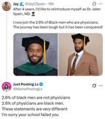

Amazon says its Leo satellite network now has enough spacecraft in orbit to begin limited commercial internet service, with 396 satellites providing "continuous service across initial latitudes." Early performance will likely be uneven, however, and well behind Starlink. "It'll be years before Amazon can boast similar performance numbers as it continues to launch a planned 3,232 Leo satellites," reports The Verge. From the report: SpaceX went live with its "Better than nothing beta" back in 2020 when it had almost 900 satellites operating in low-Earth orbit. It initially served a narrow band of users in the upper US and Canada, who complained about frequent service interruptions and high sensitivity to obstructions, with speeds between 50Mbps and 150Mbps, and latency from 20ms to 40ms. By 2022, the service and coverage areas had already dramatically improved. [...]
SpaceX currently has over 10,000 Starlink satellites in operation, providing robust internet connectivity on land, sea, and air in over 160 countries. Performance varies by the dish, service level paid for, time of day, and location of the user, but we're now talking 200Mbps median download speeds, 10Mbps to 40Mbps uploads, and latency hovering around 25ms.
Read more of this story at Slashdot.
An anonymous reader quotes a report from The Guardian: Researchers who tracked more than 90,000 people over a decade found that sitting or lying down while awake for more than 30 minutes in one period each day was associated with an increased risk of cancer death. The risk increases for every additional hour of continuous inactivity, the findings suggest. However, the researchers also found breaking up periods of sedentary behavior longer than 30 minutes with bursts of physical activity could help reduce the risk. Getting up every half-hour, even for a short walk around the office, could do wonders for your health, they said.
[...] The findings, published in Plos Medicine, focused on the health effects of prolonged sedentary behavior on a daily basis. [...] The team analyzed data from wearable devices worn by more than 91,000 UK Biobank participants, who were followed for an average of 12 years. The findings suggest prolonged inactivity lasting more than 30 minutes was associated with cancer risks. Each additional hour of prolonged inactivity every day was associated with a 10% increase in risk of cancer death. However, replacing long spells of inactivity with movement appeared to reduce that risk. Substituting one hour of sedentary behavior each day with light physical activity, such as ironing or washing up, was associated with a 12% lower risk of cancer death.
Replacing 30 minutes of inactivity each day with 30 minutes of moderate physical activity, such as walking at an average pace, was associated with an 8% lower risk. The risk was 22% lower when five minutes of inactivity was replaced with five minutes of vigorous physical activity each day, the study suggested. There were limitations to the research, including the fact that the researchers performed a statistical analysis of an observational study, so could not prove causation.
Read more of this story at Slashdot.
The US unemployment rate fell to 4.2% in June largely because 720,000 people left the labor force, pushing participation to 61.5%. Excluding the Covid-era jobs market, that's the lowest participation rate since June 1976. CNBC reports: The decline in the labor force marks a "massive exodus" driven by multiple factors, said Mike Reid, head of U.S. economics at RBC. "The unemployment rate fell to 4.2% as both the number of unemployed workers and the size of the labor force pulled back," Reid wrote in a post-report commentary. "This may well be a story of retirements but could also be a story of prior job seekers dropping out of the labor force."
[...] [T]he rolls of those counted as not in the labor force, a group that includes the unemployed and those not looking for work, jumped by 832,000. And while the establishment survey, which counts jobs filled, showed growth for the month of 57,000, the survey of households, which counts the actual level of those working, tumbled by 507,000. On a year-over-year basis, the labor force is down by just over 1 million, while the level of the employed also has fallen by 1.06 million and the ranks of the unemployed have risen by 40,000. The employment-to-population ratio slipped to 59% in June, the lowest since October 2021. All that has happened while the unemployment rate has risen by just one-tenth of a percentage point to 4.2%.
The drop in participation is sometimes attributed to a shrinking immigrant population and retiring baby boomers and Gen Xers. However, in June the biggest plunge came from what is defined as "prime age" workers, or those between the ages of 25 and 54. That rate fell 0.6 percentage point to 83.3%, its lowest since December 2023. "Looking at the statistics now, that argument doesn't hold up so well," North said of the retirement and immigration rationale. "I hate to use the word 'alarming,'" he added, but said the numbers are cause for concern.
Read more of this story at Slashdot.
The Godot Foundation will stop accepting AI-authored code, agent-submitted pull requests, and AI-generated text in contributor communications after maintainers were overwhelmed by low-effort submissions. "It is time for us to recognize that these problems aren't going away and therefore we need to take steps to reduce the burden on maintainers while ensuring we still have a pipeline to mentor new contributors to become future maintainers," the Godot Foundation said in a blog post. Contributors may still use AI for limited "menial things" if they disclose it, but humans must understand, own, and be able to fix the code they submit. PC Gamer reports: The Foundation says the pileup of Godot pull requests pending review isn't all bad: It's a sign that interest in using and contribution to Godot is increasing. But the influx of contributions authored or submitted by AI is sapping the projects' maintainers of their willingness to confront the "already tedious" work of reviewing pull requests. "If your feedback on PRs is just being absorbed by a machine and not going towards mentoring a potential future maintainer, it becomes much harder to justify spending your free time on PR review," the Foundation said.
As the problem becomes increasingly unsustainable, the Godot Foundation says it's in the process of updating its contribution policies, focusing on "adding barriers to low-effort slop" contributions, encouraging maintainers to review code, developing new contributors into future maintainers, and crucially, requiring that all contributions come from humans who are accountable for their code -- and fixing it if it fails. "AI cannot take responsibility, and we can't trust heavy users of AI to understand their code enough to fix it," the Foundation said.
The Foundation says we can expect Godot's contributing policy to soon include explicit rejections of AI-authored code, noting that contributors should only use AI assistance for "menial things" and must disclose its use. Additionally, the Foundation will reject any AI-generated text in human-to-human communications, saying it's "a basic principle of respect" -- though it says machine translations "are still acceptable" if the original text was human-authored. "Things change every day with respect to the current suite of AI tools available," the Foundation said. "We will continue taking a conservative approach in our policies towards them, but we will re-evaluate as things evolve."
Read more of this story at Slashdot.
Meta is introducing a subscription for expanded access to advanced smart-glasses features. According to Wired, "[U]sers will need the Meta One Premium Plan to unlock expanded access to some features for their smart glasses, whether it's the Ray-Ban, Oakley, or Meta-branded version." They'll still be usable with a subscription, but "certain features will be limited," the report says. From the report: Specifically, a feature called Conversation Focus, which boosts the audio of the person you're speaking with so you can hear them better in loud environments. You'll get three hours per month without a subscription, but if you want to use it more often, then you'll need to pay up. Though even then, you're still capped at 15 hours. Subscribing also nets you "Premium Device Support," where you'll get faster access to what Meta says are "human experts" trained on the smart glasses' features, should any problems arise. Guess humans are better at some things after all.
A Meta spokesperson tells WIRED that this is "not an AI rate limit." Rate limits are common on other AI platforms -- users get free access to a feature until they hit a certain cap, then they'll need to subscribe to use it more until the limit resets at the end of the month. However, the Conversation Focus feature runs on-device, meaning it doesn't need to head to Meta's servers for AI processing. There's no real-time way to monitor how many hours you've used Conversation Focus, but you'll receive a notification when you get near the limit.
"The subscription supports that ongoing work and gives power users expanded access along with premium device support," the spokesperson says. "We're going to start testing new optional subscription plans that offer more premium features and advanced capabilities for those who want to unlock more from our apps and AI glasses."
Read more of this story at Slashdot.
OpenAI is reportedly in early talks to give the U.S. government a 5% stake, potentially alongside similar contributions from other major AI companies. "Such a deal would help improve the industry's relations with the Trump administration and could help garner political support by sharing wealth generated by the AI boom with the public," reports The Guardian. From the report: [OpenAI CEO Sam Altman] and other OpenAI bosses have suggested that each of the biggest AI developers in the US should give 5% to their equity to an investment vehicle such as the Alaska Permanent Fund, a sovereign fund that invests US oil wealth into stocks and pays dividends to the state, the FT reported.
The talks are "conceptual" and in early stages, it said, and any deal could require an act of Congress to implement. Both OpenAI and Anthropic have previously suggested in policy papers that a public or sovereign wealth fund may be required in the future to distribute shares to the public. In April, OpenAI said that a "public wealth fund" could provide "every citizen -- including those not invested in financial markets -- with a stake in AI-driven economic growth." Further reading: Bernie Sanders Unveils $7 Trillion Plan To Give Americans Control of AI Industry
Read more of this story at Slashdot.
An anonymous reader quotes a report from TechCrunch: WhatsApp this week started rolling out username reservations ahead of the broader launch planned later this year. The feature -- which lets people find and message each other by handle instead of phone number -- is already raising impersonation concerns, drawing scrutiny from security experts and regulators in India, the app's largest market, with more than 500 million users. The rollout marks a shift in how people identify one another on WhatsApp. Instead of relying on phone numbers as the primary identifier, users will increasingly interact through platform-managed usernames, a change that Meta says improves privacy but that critics argue could create new opportunities for impersonation.
[...] Asked about how it protects against impersonation, Meta told TechCrunch it reserves usernames for public figures, government entities, and "some variations" of those names so only the legitimate owner can claim them. The company did not explain, however, how it decides which lookalike usernames get proactively reserved and which don't. The concerns have already reached regulators in India, where cyber fraud schemes frequently exploit messaging platforms to impersonate police, banks, and government officials. [...] Rachel Tobac, chief executive of SocialProof Security, called usernames a net privacy gain because they reduce the need to share phone numbers, which can expose users to SIM-swap attacks, phishing, and account takeovers. Still, she said, lookalike usernames still create opportunities for impersonation. "Ultimately, usernames are a great idea to avoid leaking your phone number to folks you don't know, but it's important to verify identity with the username function too," Tobac told TechCrunch. Her advice for most users: Pick a username that isn't easily guessable, so it's harder for attackers to find you, message you cold, or harass and spam you.
[...] The Mozilla Foundation said the introduction of usernames is likely to bring new tradeoffs. "Increased scams and impersonation from fake handles are potentially a big one," it told TechCrunch. "Checking a phone number can be a useful verification tool, but these harms are also permitted by the platform's fundamental design choices." Mozilla also flagged a broader interoperability question -- one worth logging if you're building on top of, or competing with, Meta's ecosystem. While letting users claim their existing Facebook and Instagram usernames may cut down on impersonation, it also shows how easily Meta can stitch identity together across its own apps, even as users still can't take that identity, or their contacts, to a rival platform. For now, WhatsApp says it is taking a gradual approach to the rollout. "We're taking our time and listening to feedback so that when it rolls out later this year we get it right," the company said in its FAQ.
Read more of this story at Slashdot.
IEEE Spectrum argues that orbital data centers remain far from economically or technically practical despite Elon Musk's prediction that space will become the cheapest place to run AI within a few years. Deploying SpaceX's proposed million-satellite constellation would require enormous increases in launch and manufacturing capacity, while cooling, radiation, maintenance, latency, orbital debris, and astronomical interference present major unresolved obstacles. Longtime Slashdot reader xetdog shares the report: Consider this: There are roughly 14,500 active satellites in orbit. Musk's Starlink constellation accounts for about two thirds of those. Both the launch cadences and satellite-manufacturing capacity would have to scale up astronomically to deploy a million orbital data center satellites. For context, there have been roughly 7,000 orbital launches in all of human history. To loft 1 million satellites into low Earth orbit on SpaceX's Starship, which is designed to carry up to 60 satellites per vehicle, would require 16,666 launches exclusively devoted to satellite deployments. Considering that SpaceX launched a record 165 orbital missions in 2025, even at 10 times that cadence, it would take a decade. And how long would it take to build 1 million satellites, given Starlink's current pace of around 4,000 per year and a generous tenfold increase in capacity? Short of a manufacturing revolution, try 25 years. Dissipating heat in space also requires enormous radiators. As IEEE Spectrum editor Dina Genkina noted, startup Starcloud has sent only one Nvidia H100 GPU into orbit, and "their radiator was too weak to let the chip run at full power." A single 700-watt H100 would require about 1.4 square meters of radiator area, while a 100-megawatt data center could need 2,500 radiators measuring 80 square meters each.
So, why are the hyperscalers hyping orbital data centers? Answer: because it's lucrative. "The Elon Musk part of it is honestly genius because he's got xAI building the data centers, SpaceX sending them to space, and Tesla building solar panels," Genkina says. "It's almost like he's paying himself."
Read more of this story at Slashdot.
According to the Wall Street Journal, SpaceX showed investors an early prototype of a slim, "handset-like" AI device running a proprietary operating system and integrating xAI technology. Elon Musk, however, denied the report, calling it "utterly false." TechCrunch reports: SpaceX, alongside sister company Tesla, does have the manufacturing expertise to pull off mass-producing a bunch of AI devices -- not to mention access to the chips needed to power any on-device compute. SpaceX has also signaled that it's keen to expand into wireless, with Starlink Mobile as a potential competitor to Verizon and AT&T. One analyst even went as far as to speculate that T-Mobile or AT&T would make fine acquisition targets for the rocket builder, though such a purchase would, undoubtedly, be pricey.
It's also not clear if SpaceX is just throwing spaghetti at the wall or if it will attempt to really mass-produce and market such a device. But one thing that seems clearer is that if OpenAI is doing it, Musk would, perhaps, want to try to do it better. [...]
Like OpenAI, SpaceX's prototype is reportedly designed to run on a proprietary operating system and integrate technology from xAI, Musk's AI company that SpaceX acquired earlier this year. This would prevent these new devices from being trapped inside another company's platforms (like Google's Android). But the intent also appears to be to create something new, with native AI interfaces. That said, the graveyard is crowded with the unsuccessful launches of AI devices from companies like Humane and Rabbit. A company wanting to sell an AI device does not equate to consumers wanting to buy such a thing. Yet.
Read more of this story at Slashdot.
An anonymous reader quotes a report from Ars Technica: US homeowners have embraced home batteries in record-breaking numbers in early 2026, spurred on by state incentives while seeking to offset rising residential electricity costs. The trend could even unlock a more flexible energy supply for power grid operators and even AI data centers. New home battery installations reached a record 673 megawatts of energy storage in the first quarter of 2026, according to the US Energy Information Administration. That trend was driven by states with high electricity prices that have implemented policies to incentivize home battery installation, Bloomberg News reported.
This residential battery trend stands out as a natural next step for states that have already successfully boosted rooftop solar adoption among homeowners, given how batteries enable homeowners to use stored solar energy at night. California and Hawaii accounted for the majority of new residential battery storage, while Texas and Arizona also saw significantly higher numbers of installations. California incentivizes homeowners with solar panels to also install batteries by offering better pricing for residential electricity exported to the grid after sunset, Bloomberg reported. Hawaii offers a one-time payment of $400 for every kilowatt of battery storage that homeowners install.
However, the record-breaking home battery installations coincided with a slowdown in residential installations of solar panels -- the result of the Trump administration and Republican-driven One Big Beautiful Bill having eliminated a 30 percent federal solar tax credit for homeowners. Nonetheless, US electricity generation from solar power continues to rise and even surpassed coal-fired generation in April. The battery installation spree also coincides with rising electricity costs for US residential customers. The Energy Information Administration's latest data shows that the nationwide average for residential electricity costs increased by more than 7 percent in April 2026 when compared to electricity costs in April 2025. So homeowners with smart home battery-management systems could benefit from storing energy when electricity prices are lowest and draining them during peak demand periods.
Read more of this story at Slashdot.
T-Mobile appears to be migrating its 303,000-core VMware environment to another platform while fighting Broadcom in court for the extended support it says its perpetual-license agreement guarantees. "The matter is somewhat urgent," The Register reports, because a court-ordered support arrangement expires August 3, "so T-Mobile may soon be unable to get support for its very substantial VMware estate." The Register reports: The dispute relates to a deal T-Mobile struck with VMware in August 2023, which saw the telco acquire perpetual licenses and two years of support for some software, plus the option for a further year of support. When Broadcom acquired VMware in 2023, it stopped selling perpetual licenses and standalone support deals for customers with those licenses. Broadcom also reduced the virtualization giant's product range from over 150 products to two subscription-only bundles. Broadcom now mostly sells its Cloud Foundation (VCF) private cloud suite. Customers including AT&T and Tesco tried to exercise their right to extended support, but Broadcom declined to do so. AT&T settled on confidential terms. Tesco is pursuing the matter in the courts.
When customers exercise their option for extended support, Broadcom argues it can't deliver because the products covered by the contract don't exist anymore, its contracts allow it to deny support for dead products, and subscriptions are now the industry standard. T-Mobile started using VMware's products in 2008. In one hearing, the carrier's counsel described T-Mobile's VMware implementation as "the base of the entire internal network" and "the place where 1,000 applications reside." Another filing, from Broadcom, says the telco runs VMware software on over 303,000 CPU cores.
Court documents allege that in 2024 Broadcom notified T-Mobile it would not renew support after the initial two-year deal expired in 2025. The two parties kept talking about possible new arrangements. T-Mobile also sought an injunction that would compel Broadcom to provide extended support. Broadcom opposed the injunction, arguing that T-Mobile deliberately waited too long to seek it. At one point T-Mobile suggested a $20 million deal for another two years of support. An affirmation filed last week by T-Mobile vice president of technology Kevin Luu says the carrier sought that arrangement "to be able to complete T-Mobile's transition away from VMware at a more deliberate pace."
The court eventually granted the injunction forcing Broadcom to offer support beyond August 2025, but required T-Mobile to pay $5.28 million and post a $500,000 undertaking. Broadcom continued to provide support but also sought damages on grounds that the injunction meant it missed out on a new deal with T-Mobile. The telco has rubbished that argument in part because the two parties were still talking about a new deal. Broadcom later proposed to charge $24 million for extended support covering six products, a sum it said would cover over 20 staff needed to support T-Mobile. The carrier fired back by pointing out that it has made just two support calls in 2026, which hardly justifies such a massive staff and expense.
Read more of this story at Slashdot.
BrianFagioli writes: Cloudflare announced new controls that give publishers more say over how AI companies access and use their content. Beginning September 15, new Cloudflare sites will allow traditional search indexing while blocking AI training and AI agent access on ad supported pages by default. The company is also expanding its monetization efforts with a Pay-Per-Use model that aims to compensate publishers when their content contributes to AI generated answers rather than simply being crawled. Cloudflare argues that publishers should not have to choose between being discoverable online and giving away their work for free to AI systems.
Read more of this story at Slashdot.
Sysdig says it has documented the first ransomware attack carried out end to end by an AI agent, which autonomously exploited exposed systems, stole credentials, established persistence, compromised a production database, and destroyed data. The research team named the attacker "JadePuffer" and said it gained initial access to an internet-facing Langflow instance by exploiting CVE-2025-3248. "The most striking characteristic, however, was the LLM's behavior," Sysdig director of threat research Michael Clark said in a blog post. An anonymous reader quotes an excerpt from The Register: JadePuffer's "self-narrating" payloads "contained natural language reasoning, target prioritization, and the kind of detailed annotations that human operators don't often write but LLM-generated code produces reflexively," Clark added. "The operation also adapted in real time, retrying failed steps within refined parameters. In one sequence, it went from a failed login to a working fix in 31 seconds." After exploiting CVE-2025-3248, a missing authentication vulnerability in Langflow that allows remote, unauthenticated attackers to execute arbitrary Python on the host, the AI agent began scanning for and collecting secrets, including LLM provider API keys, cloud credentials "with explicit coverage of Chinese providers" including Alibaba, Aliyun, Tencent, and Huawei, while also scanning for AWS, Azure and Google Cloud Platform, cryptocurrency wallets, and database credentials.
The AI also installed a crontab entry on the Langflow server to maintain persistence and call back to the attacker's infrastructure every 30 minutes. JadePuffer's intended target was a separate internet-exposed production server running a MySQL database and an Alibaba Nacos configuration service, we're told. Nacos is an open-source service-discovery and dynamic configuration platform developed by Alibaba and used in the cloud provider's microservices applications. The agent connected to the server's exposed MySQL port using root credentials, although Sysdig doesn't know how the attacker obtained them. These credentials weren't stolen from the victim's environment.
JadePuffer then attacked Nacos via multiple vectors including an authorization bypass flaw (CVE-2021-29441) and forging a valid JSON web token (JWT) using Nacos's default signing key. Additionally, using its root database access, the LLM injected a backdoor administrator into the Nacos backing database. It ultimately encrypted all 1,342 Nacos service configuration items using MySQL's built-in AES encryption function, and created an extortion demand, ransom note, Bitcoin payment address, and a Proton Mail contact [...]. However, according to the threat hunters, the victim can't recover the encrypted data, even if they paid the ransom demand, because the agent escalated "from row-level deletion to dropping entire database schemas, narrating its own targeting rationale," without backing up any of the encrypted data.
Read more of this story at Slashdot.
OnePlus is directing customers in some European markets toward OPPO devices, with its German website presenting OPPO as the natural upgrade path for existing users. The regional handoff adds to "months of speculation that the smartphone brand is slowly being folded into its parent company," reports Android Authority. From the report: The banner, seen on OnePlus' German website, tells visitors seeking "the experience you trust" that OPPO offers the same speed, performance, and compatibility that OnePlus users have come to expect. It hosts devices ranging from earbuds and tablets to OPPO's latest foldables, with each button taking users straight to OPPO's website. Particularly revealing is the wording. Instead of pushing future OnePlus hardware, the company focuses on the fact that OPPO's products are built on the hardware and software that users already know, while promising seamless compatibility with current OnePlus devices. In other words, if you're up for your next upgrade, OnePlus seems to be saying OPPO has what you're looking for right now.
Reports in the past several months have said OnePlus has been scaling back operations in several global markets. Previous restructuring reportedly included cutting headcount, a more focused regional strategy, and greater dependence on OPPO's infrastructure. The two brands have been sharing engineering resources, software development, and supply chains for years now, particularly as OxygenOS and ColorOS have begun to look more and more alike.
Interestingly, the change appears to be regional. OPPO already has a retail footprint in Germany, so the handoff is fairly straightforward. In the United States, however, things are very different, where OPPO does not officially sell smartphones. That means American OnePlus customers aren't getting the same messaging, mostly because there isn't an OPPO lineup waiting to step in.
Read more of this story at Slashdot.
Meta is reportedly developing its own cloud business that could sell access to its AI models and lease data-center computing capacity to other companies. The move would put Meta in direct competition with Amazon, Google, and SpaceX. Engadget reports: The cloud business could offer multiple services, according to [Bloomberg], like selling access to AI models run on Meta's infrastructure, or leasing the computing power of its data centers to other companies looking to train AI. Offering something akin to Amazon Web Services could help make back some of what Meta has already spent on its new bet. As part of its AI plans, the company has committed to investing $600 billion in the US by 2028. Meta has also already made more than a few expensive hires to build its AI superintelligence team. Meta Compute, the data center and AI-focused initiative Meta created in January, is currently developing the new cloud business, according to Bloomberg.
Read more of this story at Slashdot.
Janko Roettgers / The Verge : A look back at BitTorrent, launched by Bram Cohen 25 years ago, and how media piracy fueled its growth while its architecture shielded it from legal liability — Cath Virginia / The Verge … Twenty-five years ago today, a young, little-known programmer by the name of Bram Cohen fired off …
Financial Times : Sources: Anthropic moves to close loopholes that let Chinese firms like Ant use its models via workarounds including cloud providers and overseas subsidiaries — Engineers are still finding ways to use AI models despite stringent restrictions. Anthropic is moving to shut loopholes …
Dawn Lim / Bloomberg : Blackstone's QTS abandons plans to build its portion of a 2,100-acre data center campus in Virginia, following years of local opposition and legal challenges — Blackstone Inc.'s QTS is walking away from plans to build its portion of a 2,100-acre data center campus in Virginia …
Maggie Eastland / Bloomberg : Letter: chip sector group SEMI, including Micron and Samsung, warns Scott Bessent US policies affecting prices or production capacity would worsen the shortage — Government attempts to address the global memory chip shortage by influencing prices or production capacity would worsen …
Business Insider : Sources: Alexandr Wang said Meta's model currently in training, codenamed Watermelon, matches GPT-5.5 and uses an “order of magnitude more compute than Avocado” — Meta is making significant progress in the AI model race, its superintelligence chief Alexandr Wang told employees today.
The Information : Sources: Anthropic's bankers have hired UK law firm Freshfields to advise on its IPO; it also advised on Google's acquisition of Wiz and ServiceNow's Armis deal — A British law firm has scored a big win: a role in the Anthropic initial public offering, expected to raise tens of billions at a valuation of more than $1 trillion.
Stephanie Stacey / Financial Times : Spotify removed 500K+ streams of Malcolm Todd's Earrings after a 70% surge in 24 hours sent it to #1 on Spotify USA and coincided with suspicious Kalshi wagers — Platform removes more than 500,000 streams of Malcolm Todd track ‘Earrings’ on concern traders propelled it to number 1
Anna Heim / TechCrunch : Finnish quantum computing company IQM closed up 2% in its Nasdaq debut Thursday after going public via a SPAC merger at a ~$1.9B valuation — IQM, a full-stack quantum company out of Finland, went public on the Nasdaq Thursday via a SPAC merger at a valuation of about $1.9 billion.
Bloomberg : Sources: Crusoe is in active talks to raise ~$3B in a funding round expected to value the company in the ~$30B range, up from a ~$10B valuation in October — Crusoe, the data center upstart with contracts to supply AI computing power for the likes of Meta Platforms Inc. and Oracle Corp. …
Katie Paul / Reuters : At a town hall, Mark Zuckerberg said Meta's AI agent development has not accelerated as expected and its reorganization was not as “clean” as it could have been — Meta (META.O) Chief Executive Mark Zuckerberg told an internal town hall on Thursday that AI agent development …
Lucinda Shen / Axios : Source: crypto payments and settlement startup Mesh is raising funding led by Binance at a ~$2B valuation, six months after raising $75M at a $1B valuation — Binance is set to lead Mesh's funding round that will value the crypto payments and settlement company at up to $2 billion, Axios Pro has learned.
Lauren Forristal / TechCrunch : Travel app Hopper agrees to a $35M FTC settlement over allegations the company misled users by imposing hidden fees and misrepresenting the total costs — Hopper, the travel app known for its AI-driven flight and hotel price predictions, has agreed to a $35 million settlement following …
Grace Kay / The Information : Internal memo: Tesla plans to impose a $200-per-week limit for staff's AI spending beginning July 6; the tally excludes beta versions of xAI products — Tesla told employees last month it would impose a $200 per week limit for staff's AI spending beginning July 6, according to an internal memo …
Bloomberg : Sources: ElevenLabs held early talks with investors on a secondary share sale for staff that would value the startup at ~$22B; it was valued at $11B in February — ElevenLabs has held early talks with investors to let employees sell shares in a secondary offering that would value …
Cate Lawrence / Tech.eu : UK-based StirlingX, which develops secure data intelligence systems for defense and critical infrastructure, raised a $20M Series A, following a $11M seed — The UK company, which develops secure data intelligence systems for defence and critical infrastructure, will use the funding …